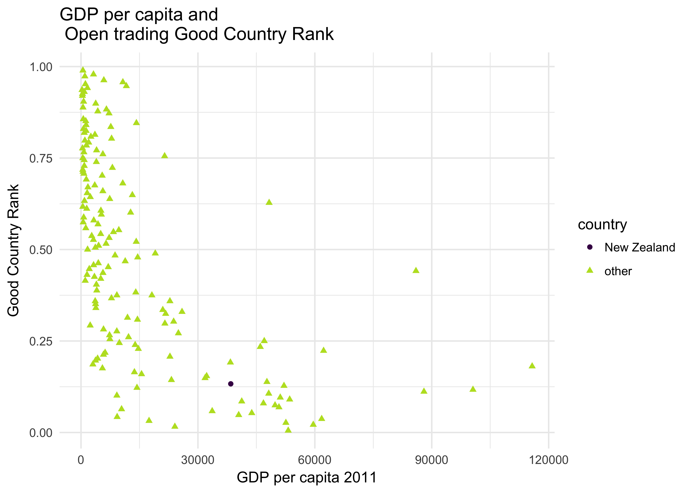

8.1 Open trading Prosperity & Equality
From Good Country Source Descriptions:
Description: Trading across borders (open trading performance compared to best practice; i.e. IFC distance to frontier)
Source: Data adapted from The World Bank: Distance to Frontier Score: Doing Business Indicators, http://www.doingbusiness.org/data/distance-to-frontier.
Treatment: Data sourced in its original form. Scores were ranked.
Neighbouring Countries:
(worse), Barbados, Cyprus, Spain, Portugal, Belgium, New Zealand, Canada, Lithuania, Norway, Switzerland, Japan, (better)

My Interpretation and Opinions:
The Open trading category is sensitive to GDP per capita, showing a curve similar to many other measures.
New Zealand is reasonable overall and in the mid range of countries near it in wealth.
Which just seems wrong.
Any New Zealander aware of national measurements knows that everyone who rates the openness of the economy has rated New Zealand in the best three countries for every year in the past few decades. Indeed, the overall summary figure of the original source rates New Zealand in the top three for every year.
The cause of the measure is that the specific attribute being used is the “Trading Across Borders” score, which is a measure made up of the paperwork, time, and cost, of shipping goods by sea. As New Zealand is at the fringes of the world’s shipping networks shipping is expensive and cargo is aggregated to ship (making it slower to get on a ship) compared to locations more central to the world’s transort networks.
With two of the three subcomponents of the measure being based on geographic location, there is nothing New Zealand can do to improve its rank in this area.
library(feather)
library(dplyr)
library(tidyr)
library(knitr)
library(ggplot2)
library(viridis)
gci11 <- read_feather("processed_data/gci11.feather")
metagci11 <- read_feather("processed_data/gci11meta.feather")
gdpcap11 <- read_feather("processed_data/gdpcap11.feather")var_code <- "pe61"
var_meta <- metagci11[metagci11$code == var_code,]
var_prettynom <- var_meta[,2]
var_sides <- 5
var_cciso <- "NZL"
var_highlight <- "New Zealand"nznear <- gci11[,c("Country.Name", "isoCode", var_code)]
names(nznear) <- c("Country", "isoCode", "Rank")
nznear <- nznear %>% filter(Rank != 0) %>% arrange(desc(Rank))
nzloc <- which(nznear$isoCode == var_cciso)
above <- ifelse(nzloc - var_sides < 1, 1, nzloc - var_sides )
below <- ifelse(nzloc + var_sides > nrow(nznear), nrow(nznear), nzloc + var_sides )
neighbours <- paste(c("(worse)", nznear$Country[above:below], "(better)"),collapse=", ") gci <- gci11[,c("isoCode",var_code)]
names(gci) <- c("isoCode","gci_rank")
axtitle <- paste("GDP per capita and\n", trimws(var_prettynom), "Good Country Rank")
gci %>%
inner_join(gdpcap11, by=c("isoCode" = "Country.Code")) %>%
filter(!is.na(X2011) & gci_rank != 0) %>%
mutate(country = ifelse(isoCode == var_cciso, var_highlight, "other")) %>%
ggplot(aes(x=X2011, y=gci_rank, colour=country, shape=country)) + geom_point() + xlab("GDP per capita 2011") +
ylab("Good Country Rank") + theme_minimal() + scale_color_viridis(discrete=TRUE, begin=0, end=0.9) +
ggtitle(axtitle)